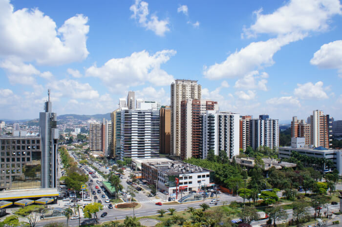
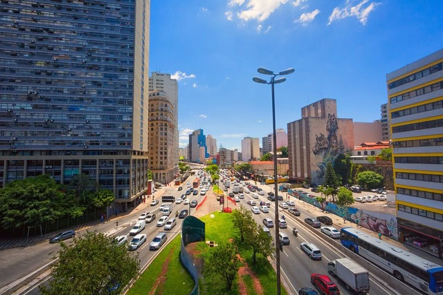
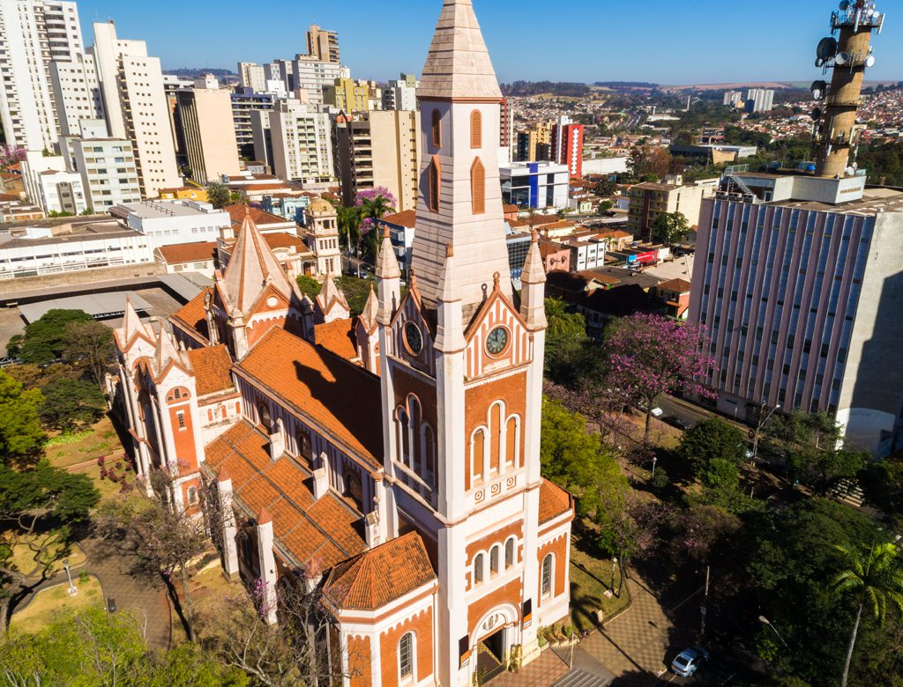

Sobre o ranking
O Estado de São Paulo possui diversos municípios que se destacam pelo uso da tecnologia, inovação e desenvolvimento de soluções inteligentes para melhorar a qualidade de vida da população.
Para esta pesquisa, foi utilizado como referência o Ranking Connected Smart Cities .
O ranking avalia os municípios brasileiros considerando diferentes áreas, como tecnologia, inovação, educação, saúde, mobilidade, segurança, meio ambiente e governança.
A edição de utiliza 75 indicadores distribuídos em 13 áreas temáticas.
A seguir estão as dez cidades paulistas mais bem colocadas no ranking.
São Paulo

São Paulo é a capital do estado e um dos maiores centros econômicos, tecnológicos e de inovação do Brasil.
A cidade possui grande concentração de empresas de tecnologia, universidades, startups, centros de pesquisa e serviços públicos digitais.
No Ranking Connected Smart Cities de , São Paulo ficou em 4º lugar entre todas as cidades brasileiras.
Barueri

Barueri possui forte atividade empresarial e vem realizando investimentos em tecnologia, inovação e infraestrutura digital.
O município também possui projetos voltados para cidades inteligentes e modernização dos serviços públicos.
Em , Barueri alcançou o 7º lugar nacional.
Santos
Santos é uma importante cidade do litoral paulista e se destaca pela utilização de tecnologia em áreas como urbanismo, mobilidade, conectividade e serviços públicos.
O município também possui um Parque Tecnológico, que contribui para o desenvolvimento de empresas, pesquisas e projetos de inovação.
Em , Santos ficou em 8º lugar nacional.
Santana de Parnaíba

Santana de Parnaíba é um município da Região Metropolitana de São Paulo que apresenta iniciativas relacionadas à educação, tecnologia, segurança e modernização da administração pública.
No Ranking Connected Smart Cities de , a cidade alcançou a 11ª posição nacional.
Sorocaba

Sorocaba é um importante polo industrial e tecnológico do interior paulista.
A cidade possui um Parque Tecnológico que aproxima empresas, universidades e instituições de pesquisa.
Em , Sorocaba ficou em 12º lugar nacional.
Campinas

Campinas é um dos principais polos de ciência, tecnologia e inovação do Brasil.
O município reúne universidades, centros de pesquisa, empresas de tecnologia, startups e instituições científicas.
A presença de instituições como a Unicamp contribui para o desenvolvimento científico e tecnológico da região.
Em , Campinas ficou em 13º lugar nacional.
São Caetano do Sul

São Caetano do Sul se destaca pela qualidade dos serviços públicos, educação, saúde, mobilidade e infraestrutura urbana.
A cidade utiliza recursos tecnológicos para melhorar a administração municipal.
Em , São Caetano do Sul ficou em 14º lugar nacional.
Ribeirão Preto

Ribeirão Preto é um importante polo de saúde, educação, pesquisa, tecnologia e agronegócio do interior de São Paulo.
A presença de universidades, centros de pesquisa e instituições de saúde contribui para o desenvolvimento científico e tecnológico.
Em , Ribeirão Preto alcançou a 26ª posição nacional.
Jaguariúna

Jaguariúna é conhecida por seu ambiente tecnológico e industrial.
O município possui empresas de tecnologia e
desenvolve projetos relacionados ao conceito
de
cidade inteligente
.
Em , Jaguariúna ficou em 29º lugar nacional.
Pindamonhangaba

Pindamonhangaba é um município do Vale do Paraíba que vem desenvolvendo iniciativas relacionadas à modernização da gestão pública, tecnologia, planejamento urbano e sustentabilidade.
O município aparece entre as cidades paulistas de destaque no Ranking Connected Smart Cities de .
A cidade ocupa a 30ª posição nacional.